<title>Mourning Watch type scale</title>
<meta name="claude:viewport-fit-sides" content="cover">
<link rel="stylesheet" href="https://fonts.googleapis.com/css2?family=Cormorant+Garamond:wght@600&display=swap">
<style>
/* Layout: one column. A short brief, then one row per screen with the three scales side by side (stacked on narrow screens); each picture is a 1920x1080 capture of the game window and opens full screen on click. Single dark look: the captures are the game's own near-black. */
:root {
  color-scheme: dark;
  --ground: #070707;
  --ink: #b9b4aa;
  --ink-bright: #ddd6c8;
  --muted: #8d8982;
  --hairline: #3a3835;
  --warm: #f0b45a;
  --display: "Cormorant Garamond", Georgia, "Times New Roman", serif;
  --text: system-ui, -apple-system, "Segoe UI", Roboto, sans-serif;
}
body { background: var(--ground); color: var(--ink); font: 16px/1.55 var(--text); }
main { max-width: 1900px; margin: 0 auto; padding-block: 2rem 4rem;
  padding-left: max(16px, env(safe-area-inset-left, 0px)); padding-right: max(16px, env(safe-area-inset-right, 0px));
  display: flex; flex-direction: column; gap: 2.75rem; }
header, .brief { max-width: 72ch; display: flex; flex-direction: column; gap: .6rem; }
h1 { font: 600 2.5rem/1.1 var(--display); color: var(--ink-bright); margin: 0; letter-spacing: .02em; text-wrap: balance; }
h2 { font: 600 1.8rem/1.15 var(--display); color: var(--ink-bright); margin: 0; }
h3 { font: 600 1.25rem/1.2 var(--display); color: var(--ink-bright); margin: 0; letter-spacing: .02em; }
p { margin: 0; }
strong { color: var(--ink-bright); font-weight: 600; }
.cands { display: grid; grid-template-columns: repeat(3, minmax(0, 1fr)); gap: 1.25rem; }
.cand { display: flex; flex-direction: column; gap: .35rem; min-width: 0; }
.cand .tag { font-size: .78rem; letter-spacing: .14em; text-transform: uppercase; color: var(--muted); }
.cand.offer .tag { color: var(--warm); }
.cand p { color: var(--muted); font-size: .92rem; }
section.screen { display: flex; flex-direction: column; gap: .9rem; }
section.screen > p { color: var(--muted); max-width: 90ch; }
.row { display: grid; grid-template-columns: repeat(3, minmax(0, 1fr)); gap: 1rem; }
figure { margin: 0; display: flex; flex-direction: column; gap: .4rem; min-width: 0; }
figcaption { font-size: .85rem; color: var(--muted); }
figcaption b { color: var(--ink-bright); font-weight: 600; letter-spacing: .08em; }
figcaption .bad { color: var(--warm); }
button.shot { display: block; width: 100%; padding: 0; border: 1px solid var(--hairline); background: #000; cursor: zoom-in; }
button.shot:focus-visible { outline: 2px solid var(--warm); outline-offset: 3px; }
button.shot img { display: block; width: 100%; height: auto; }
button.shot:fullscreen { border: 0; cursor: zoom-out; display: flex; align-items: center; background: #000; }
.tablewrap { overflow-x: auto; }
table { border-collapse: collapse; font-variant-numeric: tabular-nums; }
th, td { text-align: left; padding: .4rem 1.4rem .4rem 0; border-bottom: 1px solid var(--hairline); white-space: nowrap; }
th { color: var(--muted); font-weight: 500; font-size: .85rem; }
td:first-child { color: var(--ink-bright); }
td.x { color: var(--warm); }
ul { margin: 0; padding-left: 1.2rem; display: flex; flex-direction: column; gap: .3rem; }
@media (max-width: 900px) { .row, .cands { grid-template-columns: 1fr; } }
</style>
<main>
  <header>
    <h1>Type scale for every screen</h1>
    <p>Each picture is a <strong>1920×1080 capture</strong> of a game window, drawn in Godot with the bundled Cormorant Garamond. Your laptop is 1920×1080, so a picture shown full screen is the size the game would be.</p>
    <p><strong>How to compare:</strong> click a picture to show it full screen and press Esc to come back. Look at whether you can read each screen comfortably, and whether it looks crowded. Then pick in Claude's option window.</p>
  </header>

  <div class="cands">
    <div class="cand"><span class="tag">A · reference only</span><h3>As DESIGN.md is written now</h3><p>Labels 28 px, body 32, headings 56, strengths 48; small labels in grey (muted), unavailable things darker still (dim). This is what you found too small and dim on the read-out. It is shown for comparison and is not one of the choices.</p></div>
    <div class="cand offer"><span class="tag">B · small text raised</span><h3>Floor up, top kept</h3><p>Labels 42, body 42, value 48, caption 48, headings 60, title 108, strengths 72 (your option C). All text is ink or brighter; only an unavailable thing is grey (muted). The small sizes grow the most; headings and the title barely move.</p></div>
    <div class="cand offer"><span class="tag">C · everything ×1.5</span><h3>Whole scale one and a half times</h3><p>Labels 42, body 48, value 60, caption 66, headings 84, title 120, strengths 72. Same colours as B. Everything grows, including menu entries and the title.</p></div>
  </div>

  <section class="screen">
    <h2>Planning</h2>
    <p>The read-out is the real game screen (option C), with the tray drawn under it. In B and C the tray's top line ("In hand" and the tools) is too wide for one line, so the tray becomes three lines (in hand, tools, committing) and the span moves up to make room. A keeps the two-line tray DESIGN.md describes.</p>
    <div class="row">
      <figure><button class="shot" type="button" aria-label="A, planning, full screen">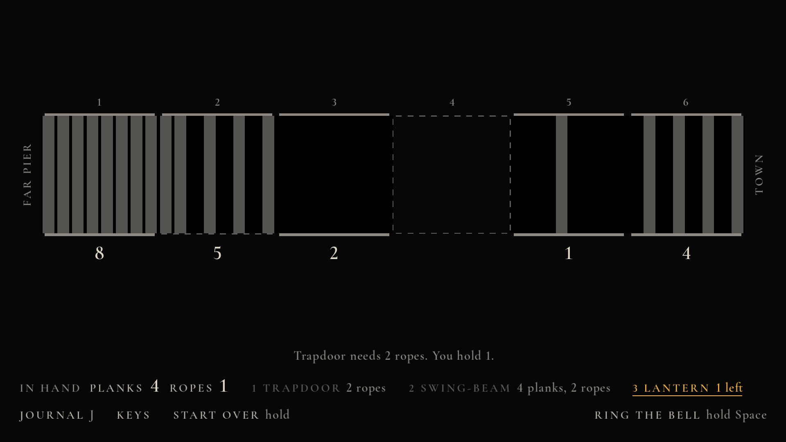</button><figcaption><b>A</b> · two-line tray fits (1,177 of 1,216 px)</figcaption></figure>
      <figure><button class="shot" type="button" aria-label="B, planning, full screen">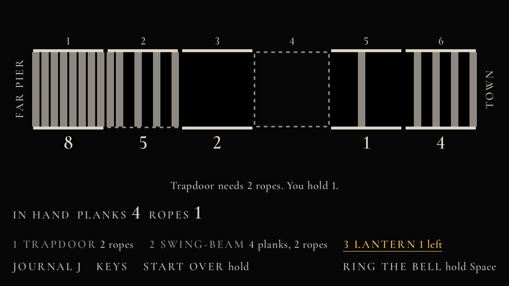</button><figcaption><b>B</b> · three lines; tools line 1,080 of 1,216 px</figcaption></figure>
      <figure><button class="shot" type="button" aria-label="C, planning, full screen">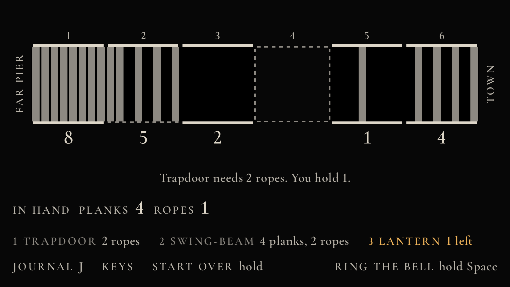</button><figcaption><b>C</b> · three lines; tools line 1,153 of 1,216 px</figcaption></figure>
    </div>
  </section>

  <section class="screen">
    <h2>Title</h2>
    <p>The title and the four menu entries. The chosen entry is warm with its 2 px rule; the soft glow is not drawn in any of these pictures (how it is drawn is still open, DW-21).</p>
    <div class="row">
      <figure><button class="shot" type="button" aria-label="A, title, full screen">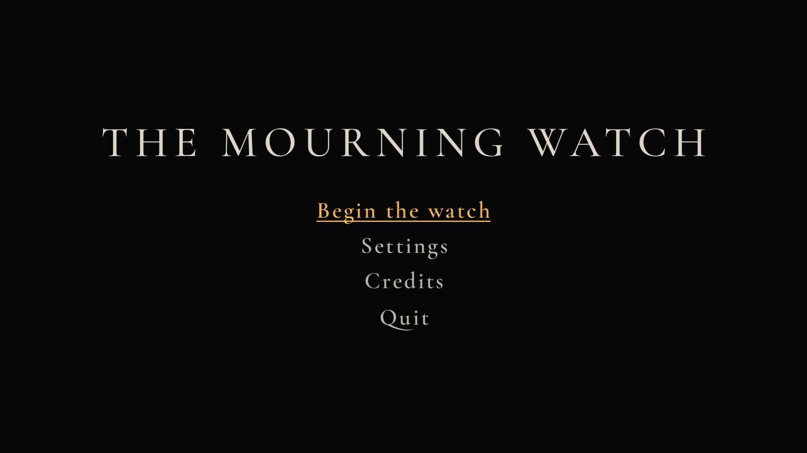</button><figcaption><b>A</b> · headings 56</figcaption></figure>
      <figure><button class="shot" type="button" aria-label="B, title, full screen">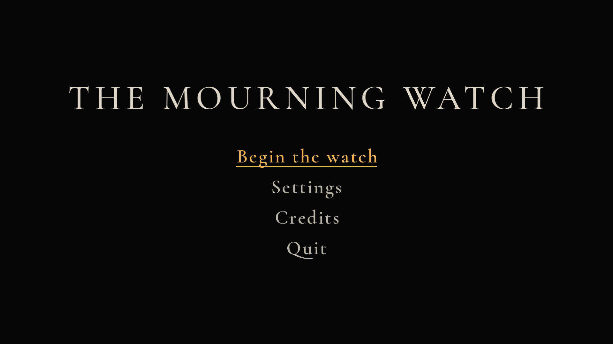</button><figcaption><b>B</b> · headings 60</figcaption></figure>
      <figure><button class="shot" type="button" aria-label="C, title, full screen">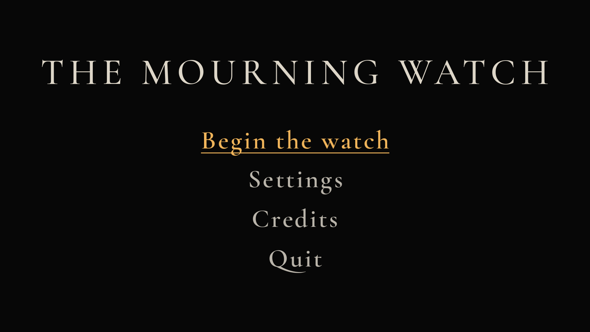</button><figcaption><b>C</b> · headings 84</figcaption></figure>
    </div>
  </section>

  <section class="screen">
    <h2>Settings</h2>
    <p>All 17 settings in their four groups. None of the three fits one column (the list grew to 17 with the accessibility settings), so all are two columns. In C the two columns use the whole width.</p>
    <div class="row">
      <figure><button class="shot" type="button" aria-label="A, settings, full screen">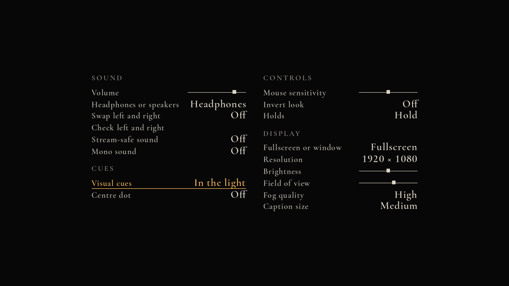</button><figcaption><b>A</b> · two columns, 819 px wide</figcaption></figure>
      <figure><button class="shot" type="button" aria-label="B, settings, full screen">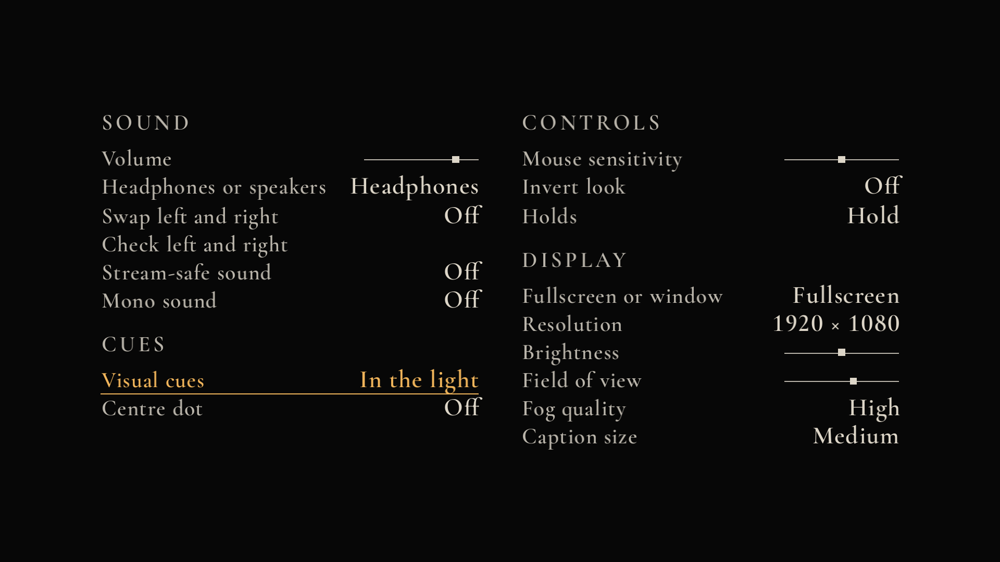</button><figcaption><b>B</b> · two columns, 1,022 px wide</figcaption></figure>
      <figure><button class="shot" type="button" aria-label="C, settings, full screen">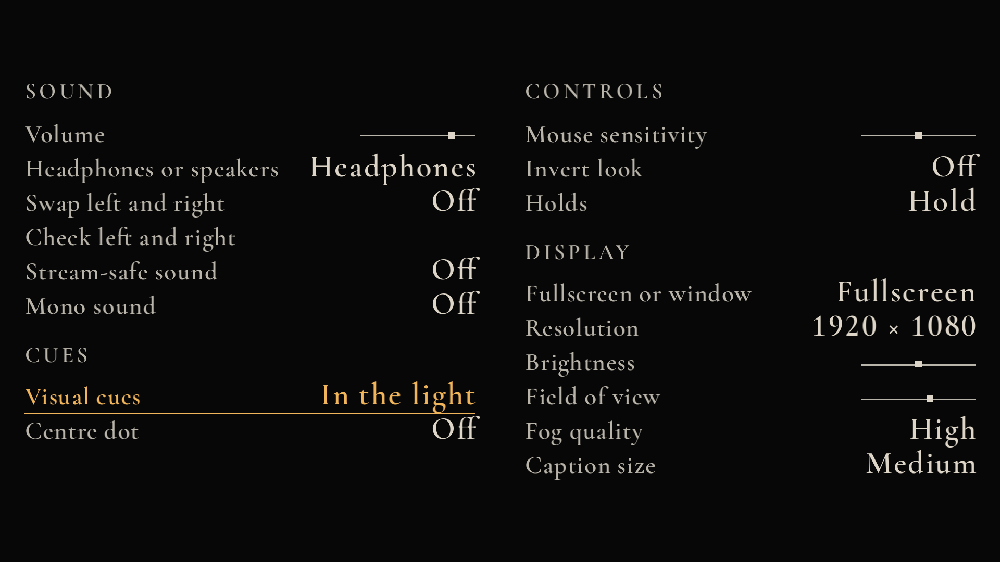</button><figcaption><b>C</b> · two columns, 1,218 of 1,216 px: <span class="bad">2 px too wide</span></figcaption></figure>
    </div>
  </section>

  <section class="screen">
    <h2>Dawn ledger</h2>
    <p>Only the ledger page is drawn; at the left, the twelve town windows stand in for the span. The name and epitaph are stand-ins, and they are upright because the italic font is not bundled yet. In B the page is wider (42% of the view, not 36%) and each label sits on the same line as its value, which is how EXPERIENCE.md already writes the lines. With the label above the value it is too tall at B. At C it does not fit even like this.</p>
    <div class="row">
      <figure><button class="shot" type="button" aria-label="A, ledger, full screen">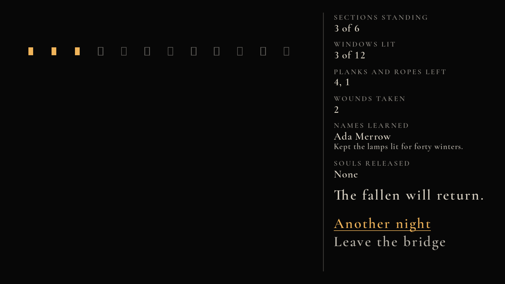</button><figcaption><b>A</b> · 36% page, label above value: fits</figcaption></figure>
      <figure><button class="shot" type="button" aria-label="B, ledger, full screen">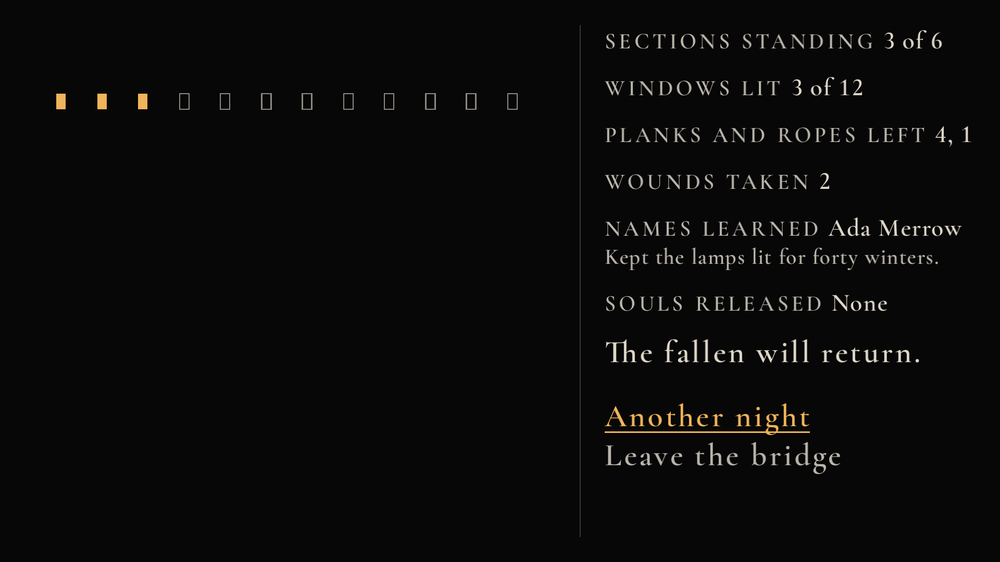</button><figcaption><b>B</b> · 42% page, label and value on one line: fits</figcaption></figure>
      <figure><button class="shot" type="button" aria-label="C, ledger, full screen">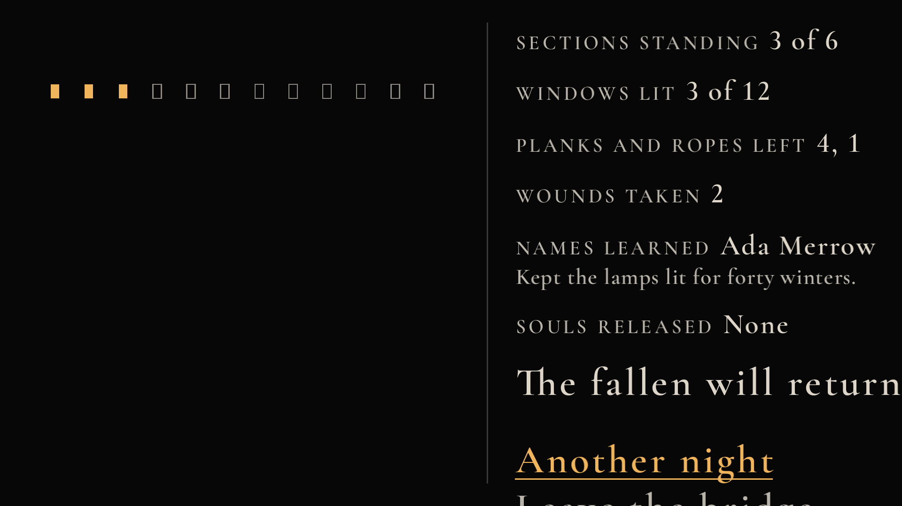</button><figcaption><b>C</b> · 46% page, one line: <span class="bad">too tall and too wide</span></figcaption></figure>
    </div>
  </section>

  <section class="screen" id="ledger-widest">
    <h2>Dawn ledger with the widest values</h2>
    <p>Added after you chose B. The ledger above was measured with small counts. With the widest values a night can produce (two-digit counts on every line and a long name), the 42% page overflows: the planks-and-ropes line needs 505 px of 473 and the name 591. Two ways to fit it, both drawn with those widest values.</p>
    <div class="row">
      <figure><button class="shot" type="button" aria-label="B ledger as chosen, widest values, full screen">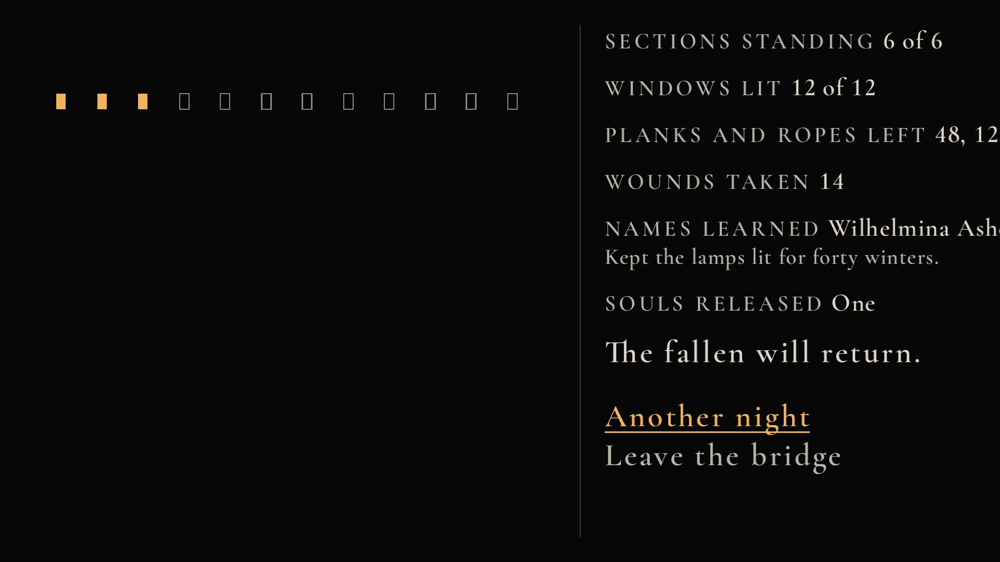</button><figcaption><b>As chosen</b> · 42% page: <span class="bad">two lines run off the edge</span></figcaption></figure>
      <figure><button class="shot" type="button" aria-label="Ledger option 1, full screen">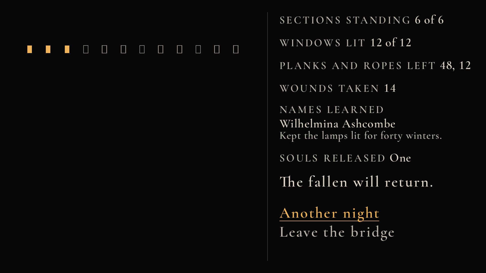</button><figcaption><b>1</b> · page 45% wide; the name on its own line under its label: 603 tall, widest 505 of 512</figcaption></figure>
      <figure><button class="shot" type="button" aria-label="Ledger option 2, full screen">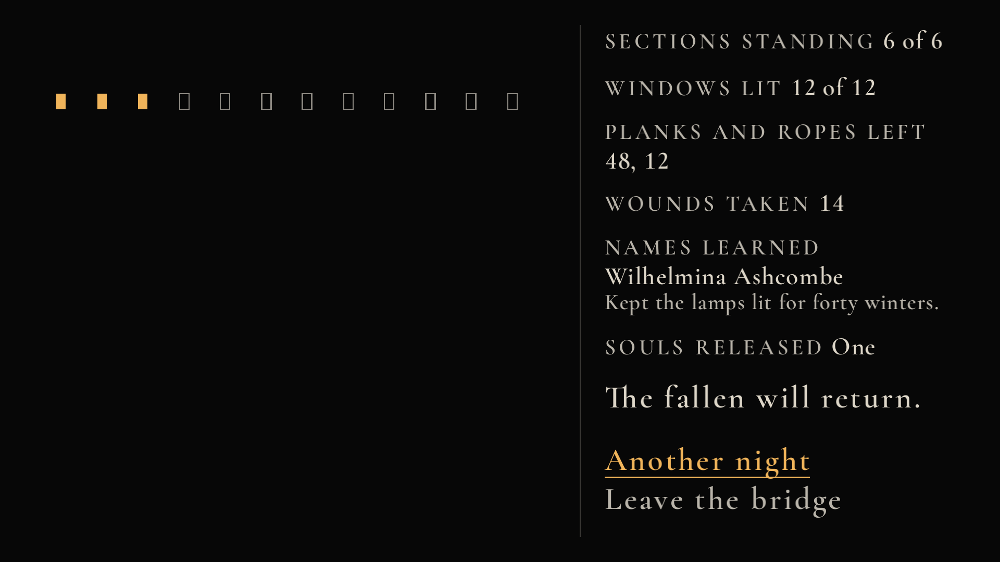</button><figcaption><b>2</b> · page stays 42%; planks-and-ropes and the name go under their labels: 632 of 656 tall</figcaption></figure>
    </div>
  </section>

  <section class="screen" id="rig-names">
    <h2>A rig's name on the span</h2>
    <p>Found by the review. In planning, a placed trapdoor or swing-beam is drawn as a frame over its section with its name on a dark tag. At scale B the name in label capitals is wider than a section (SWING-BEAM 211 px, TRAPDOOR 182, a section 172 inside its joints). The frames are put on sections 2 and 4 only to show the size; where they go is not the point.</p>
    <div class="row">
      <figure><button class="shot" type="button" aria-label="Rig names in capitals, full screen"></button><figcaption><b>Capitals</b> (as written): <span class="bad">wider than the section</span></figcaption></figure>
      <figure><button class="shot" type="button" aria-label="Rig names in body text, full screen">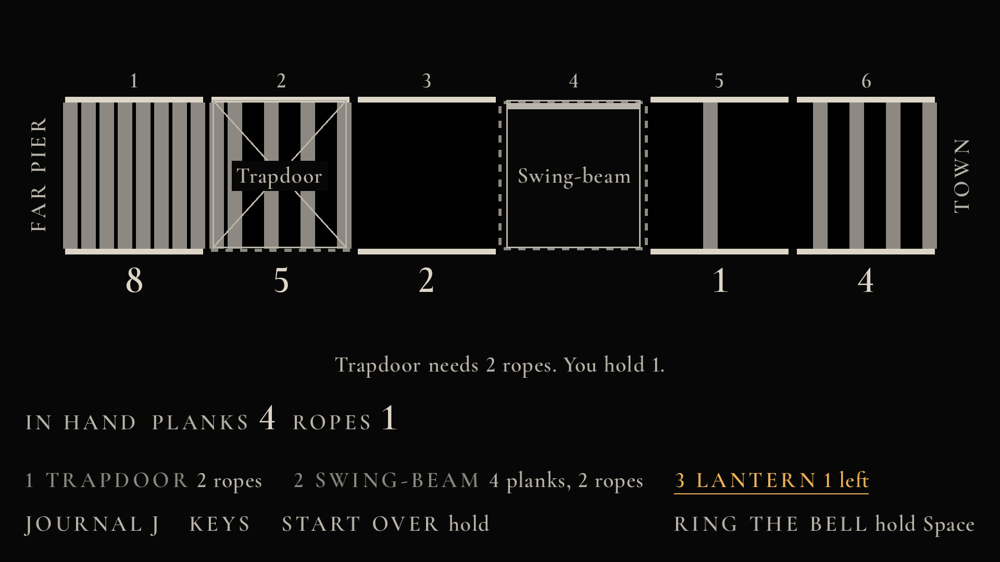</button><figcaption><b>Body text</b>, lower case: 145 of 172 px</figcaption></figure>
      <figure><button class="shot" type="button" aria-label="Rig frames with no name, full screen">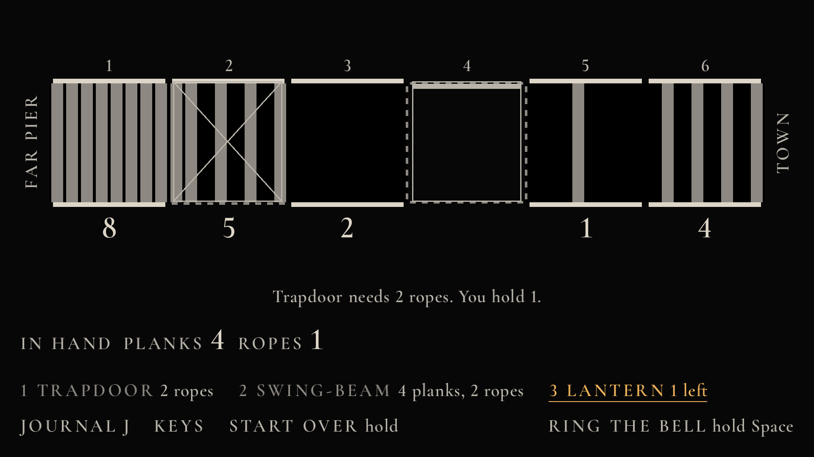</button><figcaption><b>No name</b>: the frame alone (crossed = trapdoor, bar = swing-beam)</figcaption></figure>
    </div>
  </section>

  <section class="screen">
    <h2>Key card</h2>
    <p>The densest screen: every key with its condition, and the six signs. The wording is a stand-in (epic 5 writes it). In B and C the night's keys take a column of their own, and the signs are set in body text rather than as key names. B just fits; C runs off the bottom.</p>
    <div class="row">
      <figure><button class="shot" type="button" aria-label="A, key card, full screen">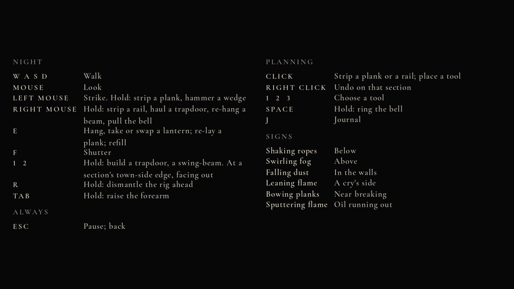</button><figcaption><b>A</b> · fits with room to spare</figcaption></figure>
      <figure><button class="shot" type="button" aria-label="B, key card, full screen">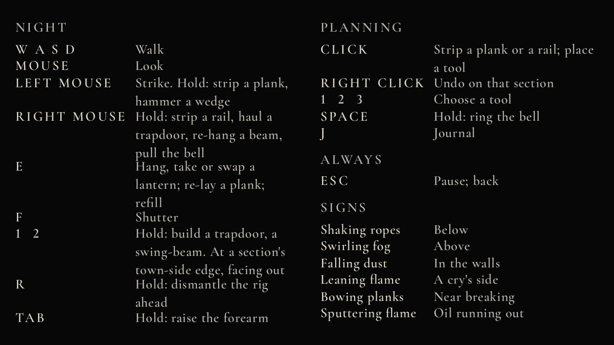</button><figcaption><b>B</b> · tallest column 641 of 656 px</figcaption></figure>
      <figure><button class="shot" type="button" aria-label="C, key card, full screen">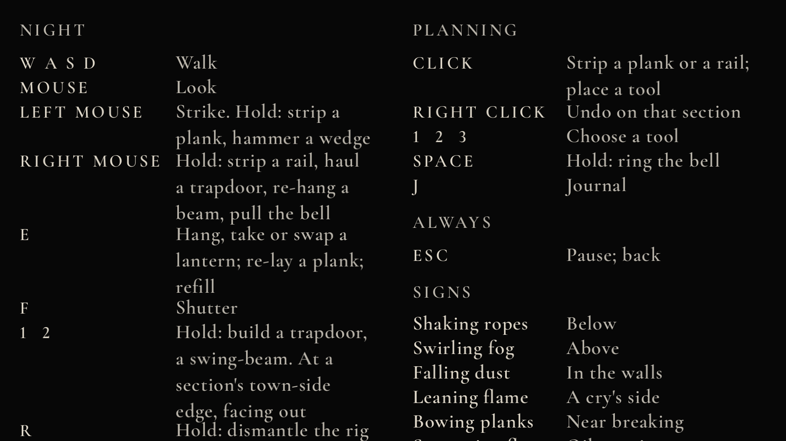</button><figcaption><b>C</b> · tallest column 770 of 656 px: <span class="bad">does not fit</span></figcaption></figure>
    </div>
  </section>

  <section class="brief">
    <h2>What was measured</h2>
    <p>Widths and heights are in canvas pixels (the game's 1280×720 canvas; one canvas pixel is 1.5 screen pixels on your laptop). The room inside the safe margins is 1,216 across and 656 down.</p>
    <div class="tablewrap"><table>
      <thead><tr><th>Screen</th><th>A</th><th>B</th><th>C</th></tr></thead>
      <tbody>
        <tr><td>Planning, tools line</td><td>1,177 (two-line tray)</td><td>1,080 (three lines)</td><td>1,153 (three lines)</td></tr>
        <tr><td>Settings, one column tall</td><td class="x">704 of 656</td><td class="x">881 of 656</td><td class="x">1,042 of 656</td></tr>
        <tr><td>Settings, two columns wide</td><td>819</td><td>1,022</td><td class="x">1,218</td></tr>
        <tr><td>Ledger, height</td><td>602 (stacked)</td><td>575 (one line)</td><td class="x">725 (one line)</td></tr>
        <tr><td>Ledger, widest line</td><td>379 of 401</td><td>471 of 473</td><td class="x">562 of 516</td></tr>
        <tr><td>Key card, tallest column</td><td>435</td><td>641</td><td class="x">770</td></tr>
      </tbody>
    </table></div>
    <p>Not drawn here: the soft glow, italics, the night's caption and the forearm. A choice made from these pictures still has to be checked in the game on your laptop.</p>
  </section>
</main>
<script>
document.querySelectorAll("button.shot").forEach(function (b) {
  b.addEventListener("click", function () {
    if (document.fullscreenElement) { document.exitFullscreen().catch(function () {}); return; }
    if (b.requestFullscreen) { b.requestFullscreen().catch(function () { window.open(b.querySelector("img").src, "_blank"); }); }
  });
});
</script>
